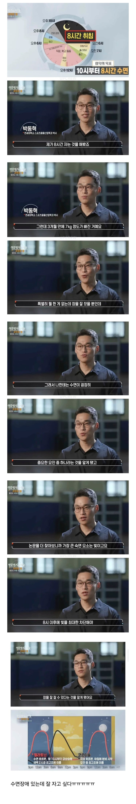

3개월 동안 저녁 8시 이후에 인공조명(빛) 줄이고
10시 취침 - 6시 기상 반복한 남자
7kg 감량되었다고 함

3개월 동안 저녁 8시 이후에 인공조명(빛) 줄이고
10시 취침 - 6시 기상 반복한 남자
7kg 감량되었다고 함
빛을 피하라는게 피부에 닿아서가 아니라 눈이랑 관계있는거지? 안대쓰면 되는걸까
정확하진않아서 흘려들어도되는데
빛을감지하는 부위가눈말고도 또있다고 하는글을 본기억이 있음
그래서 암막커튼같은걸쓰는게 훨좋댜
아닐걸 몸이 낮으로인식한다던데
망막-뇌로 빛 신호가 전달되면 (혹은 전달이 꺼지면) 거의 전신에서 생체리듬 관련 인자 (대표적으로 BMAL1이나 CLOCK 이라고 부름 )의 활성이 변하는데, 이 인자가 멜라토닌이나 코티솔 뿐 아니라 수많은 유전자를 조절하게 되서 그럼.
이 생체리듬 인자들가 대사 관련 유전자랑도 연관이 깊어서 빛의 유무, 잠의 시간을 조절하는 것 만으로도 지방 분해 촉진, 에너지 소비 등에 유의미한 역할을 했을 것 같음
망막이니 안대로 충분히 가능하다는거네
뭔 개 말도안되는 소리임
대사량이라도 늘었나
8시간 숙면을 하려면 식사 시간도 제한 해야하고 식사량도 제한 해야함. 자는중에 손상된 몸을 회복해서 가져다 쓰는 열량도 상당 하다고 하는데 기초대사량이라는 부분에 속아서 자는동안엔 기초대사량 만큼만 소비된다. 라는 커튼이 쳐져있다고 함.
결과적으로 최소 석식부터의 식단 관리와 규칙적인 생활 덕에 빠졌다고 볼 수 있지. 단순 8시간 자서 살이 빠졌다고 보긴 힘들고 8시간 자야지! 하고 그뒤에 8시간 자기위한 노력에서 살이 빠졌다고 보는게 합리적일거같음.
저녁밥도 일찍 먹어야하고 추가적인 야식도 덜하게 될듯 활동량도 일찍자고 일찍일어나면 더 늘어나겠고 복합적인 원인이 있을테지만 보통 저런 프로그램들이 '8시간'에 촛점을 두고 결과값만 비교해서 우와! 하는걸 좋아함
잠안자면 비만호르몬 나옴
살빠지는걸 떠나서 8시간 안꺠고 자는것도 능력임
진짜임. 눈 수술하고 잘 안보여서 오디오북 들으면서 거의 한달을 집에서 잘 쉬고 잘 먹으니 오히려 살이 빠짐.
요즘 안대 쓰고 자니까 확실히 수면 질이 올라가는거 같던데
아님 8시간씩 꼬박 5년을 잤는데 +8kg!!
그게 +0kg임
8시간 자고 싶다..머리만 대면 잘 수있는데 애기키우다보니.. 살 10kg이상 찜
퇴근을 10시에 못해 !
중간에 운동도 있는데? 잘자고+운동
잘 자서 빠진게 아니라 야식을 안 먹서 빠진거 아닐까?
스트레스 호르몬(코르티솔)이 지방축적에 연관이 있는데 잠을 잘 자야 이게 줄어든대
5 ~ 6시간 자면서 만성피로 달고 살았다가
7.5 ~ 8시간 자보니 낮에 하나도 안 피곤함
8시간을 못자 무침 ㅠㅠ
체감으론 담배 술 04시취침 12시 기상 하던 20대 백수때보다. 그냥 술담배 안하고 19시에 치킨 처먹고 22시 취침 05시 기상 하는 지금이 더 몸이 가벼운것 같음 체중은 동일함
8시 이후로 쇼츠를 못보는 삶이라니
그래서 마운자로나 위고비도 피로감이나 수면량 증가하게 하는데 영향이 있는건가?